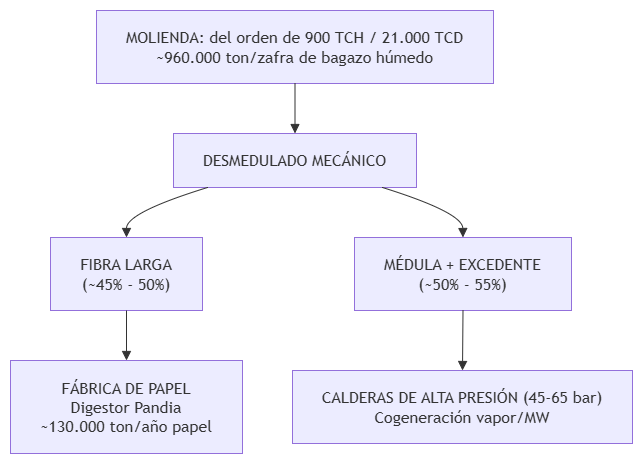
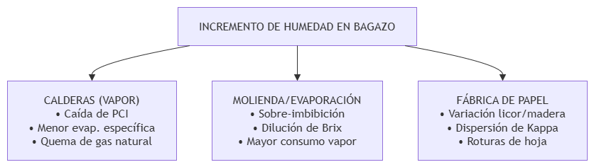
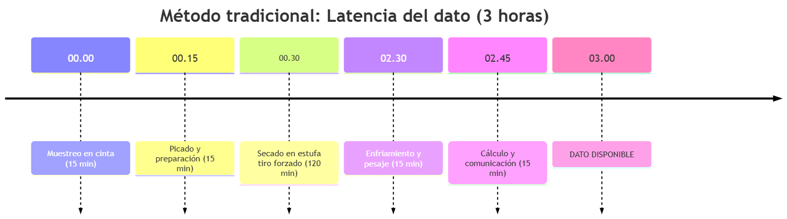

Cuando el cuello de botella no es el proceso, es el tiempo del dato
Metodología
Scoping
Recovery Audit
En la gestión ejecutiva de un complejo agroindustrial integrado, la intuición y los reportes diferidos son los mayores destructores silenciosos de EBITDA.
El bagazo de caña de azúcar, en una estructura industrial con fábrica de celulosa y papel integrada, cumple una doble función que rara vez se analiza en conjunto: es simultáneamente materia prima fibrosa de alto valor y combustible de biomasa para las calderas de alta presión que energizan todo el complejo. Su porcentaje de humedad (H) y su contenido de sacarosa residual (Pol) constituyen el vector de estado termodinámico y económico que gobierna el rendimiento global del negocio.
Composición, rangos y la singularidad del complejo integrado
A la salida del último molino del tándem de molienda, el flujo másico de bagazo responde a la siguiente matriz composicional en base húmeda:
- Humedad (H): 49,0% a 52,5% (con desviaciones críticas superiores al 54,0% ante desbalances en la imbibición o desgaste del rayado de las masas).
- Fibra insoluble (F): 44,0% a 47,0% (fracción rica en α-celulosa, hemicelulosa y lignina).
- Sacarosa residual (Pol): 1,60% a 2,30% (azúcar no extraído disuelto en el agua remanente).
- Cenizas e impurezas minerales (C): 1,2% a 2,5% (sílice y suelo retenidos en la cosecha).
En un ingenio estándar con destilería anexa, el bagazo es tratado como un subproducto energético: se quema en su totalidad para lograr autosuficiencia térmica o para inyectar excedentes de energía a la red eléctrica.
En un complejo agroindustrial integrado de esta escala, que procesa del orden de 3.300.000 a 3.400.000 toneladas de caña por zafra (~21.000 TCD, a un ritmo continuo de ~875-900 TCH), el bagazo es un insumo estratégico escaso. El desmedulado separa la fibra larga del parénquima o médula. La fibra alimenta los digestores químicos continuos para producir entre 120.000 y 130.000 toneladas/año de papel encapado y no encapado para uso comercial e industrial, mientras que la médula y el bagazo sobrante alimentan las calderas de vapor vivo (45 a 65 bar).
Si la humedad del bagazo a calderas se incrementa, el déficit de vapor fuerza una decisión operativa destructiva de valor: desviar bagazo entero apto para papel hacia los quemadores, sustituyendo un producto final de alto margen por biomasa de bajo poder calorífico, o quemar gas natural fósil en calderas auxiliares para evitar la caída del colector principal.
Balances termodinámicos y magnitud de pérdidas
Cuando la humedad del bagazo sube, el impacto térmico y químico se propaga en cascada sobre tres subsistemas acoplados:

1. Degradación del poder calorífico inferior
La literatura de ingeniería azucarera (Hugot, Handbook of Cane Sugar Engineering) describe una relación empírica aproximadamente lineal entre humedad y poder calorífico neto del bagazo:
\[\Delta PCI \approx -k \cdot \Delta H, \qquad k \approx 48{,}5\ \text{kcal/kg por cada } 1{,}0\%\text{ de humedad}\]
Esto ocurre por dos fenómenos simultáneos: disminuye la fracción másica de materia orgánica combustible por kilogramo de bagazo alimentado, y parte del calor liberado en el hogar de la caldera debe consumirse como calor latente de vaporización (\(h_{fg} \approx 2.440\) kJ/kg) para evaporar el agua intrínseca del combustible, expulsándola como vapor sobrecalentado por chimenea a 160–180°C.
Al reducir la humedad promedio en 2,0 puntos (por ejemplo, del 51,8% al 49,8%):
- El PCI aumenta en torno a +97 kcal/kg (+406 kJ/kg, de 1.680 a 1.777 kcal/kg — un +5,8% de energía térmica neta aprovechable).
- La evaporación específica de la caldera sube de 2,05 a 2,22 kg vapor/kg bagazo.
- Sobre el orden de 500.000 toneladas de bagazo quemadas por zafra en un complejo de esta escala, esto representa una generación adicional cercana a 85.000 toneladas de vapor vivo, desplazando directamente alrededor de 6.800.000 m³ de gas natural.
2. El balance acoplado imbibición-evaporación
Para agotar el azúcar residual (Pol en bagazo), la molienda utiliza imbibición compuesta. Sin embargo, aumentar el caudal de agua de imbibición sin supervisión analítica en tiempo real induce rendimientos decrecientes: cada tonelada de agua de imbibición agregada en exceso, que no logra ser drenada por las masas prensa, diluye el jugo mixto (el Brix cae de 15,5° a 13,5°). Esa agua adicional debe evaporarse en el tren de múltiple efecto, incrementando la demanda de vapor de escape a razón de aproximadamente 0,22 a 0,25 toneladas de vapor por tonelada de agua extra. Si esto coincide con una caldera perdiendo rendimiento por bagazo húmedo, el colector colapsa.
3. Impacto en digestores continuos de celulosa
En la planta de pulpa química a la soda, el control estequiométrico del digestor se rige por la relación licor activo / fibra seca. Si la humedad oscila ±3% sin detección inmediata, la concentración efectiva de álcali sobre fibra seca varía más del 6%, se descontrola la cinética de deslignificación (disparando la variabilidad del Número Kappa, con \(\sigma_K > 2{,}5\)), y la pulpa resultante sufre fluctuaciones en su grado de refinación y caídas en el índice de tracción. En las máquinas continuas de papel a alta velocidad, estas inhomogeneidades estructurales generan micro-cortes de la hoja húmeda en las prensas y sequería.
Método tradicional y la brecha operativa del dato diferido
El ajuste de la presión hidráulica de los molinos y el caudal de imbibición dependía históricamente del método gravimétrico ICUMSA GS7-19 (estufa convectiva a 105°C + digestión húmeda Spencer para Pol):

La latencia total del ciclo era de 3 horas. En un complejo de esta escala, procesando del orden de 900 TCH, durante esas 3 horas de “ceguera analítica” pasaban por los molinos cerca de 2.700 toneladas de caña, se despachaban unas 780 toneladas de bagazo a calderas y fábrica de papel en condiciones desconocidas, y se consumían alrededor de 1.600 toneladas de vapor sin poder realizar correlaciones causa-efecto.
Las termobalanzas halógenas rápidas de laboratorio fracasaban sistemáticamente: su alícuota de 15 g era incapaz de representar un flujo heterogéneo de cientos de toneladas por hora, compuesto por mezclas variables de corteza y médula. El tándem operaba en lazo abierto, dependiendo de la pericia subjetiva del maquinista.
Para resolver la latencia se instaló un espectrómetro de reflectancia difusa en el infrarrojo cercano (NIR, rango 1.100 a 2.200 nm) sobre la banda transportadora de salida del último molino, equipado con purga de aire seco continuo para evitar la acumulación de polvo y la condensación de vapor.
1. Tratamiento quimiométrico multivariante (PLS)
El bagazo presenta dispersión física superficial y variabilidad en el tamaño de partícula. Para corregir las no linealidades ópticas y los desplazamientos de línea base espectral se aplicó un pipeline matemático estricto: corrección de dispersión (normalización SNV combinada con corrección de dispersión multiplicativa, MSC); derivación matemática (primera derivada con filtro polinomial de Savitzky-Golay, ventana de 9 puntos, polinomio de 2° orden); y regresión por mínimos cuadrados parciales (PLS), calibrada contra más de 400 muestras contrastadas por método oficial ICUMSA durante toda la zafra, abarcando variedades tempranas, intermedias y tardías.
Desempeño analítico resultante: humedad con R² = 0,961 y RMSEP = ±0,38%; sacarosa residual con R² = 0,944 y RMSEP = ±0,11%.
2. Implementación operativa y lazo cerrado
La señal se integró al DCS mediante protocolo industrial, con un filtro de media móvil de 60 segundos, y se proyectó en una pantalla de gran formato sobre la plataforma del último molino. El operador pasó de recibir una auditoría punitiva de fin de turno a controlar un lazo de realimentación visual en tiempo real: si la humedad superaba el umbral objetivo, el maquinista corregía al instante la presión hidráulica de las vírgenes o modulaba las bombas de imbibición.
Cuantificación del impacto físico-operativo
La estabilización del proceso en torno al target óptimo (H ≈ 49,5%, reducción de Pol en el orden de 0,15 puntos) genera tres fuentes independientes de mejora, medibles en unidades físicas:
| Frente operativo | Mecanismo físico de optimización | Impacto físico / zafra |
|---|---|---|
| Recuperación de sacarosa | Menor pérdida de Pol en bagazo por optimización de imbibición | Del orden de +1.200 toneladas de azúcar equivalente |
| Eficiencia térmica | Mayor PCI por menor humedad, menor consumo de vapor | Desplazamiento de ~6.800.000 m³ de gas natural fósil |
| Fábrica de papel | Menor varianza de Kappa, reducción de roturas en máquina (mejora de OEE) | Del orden de +1.000 toneladas netas de papel comercializable |
Los tres frentes convergen sobre el mismo dato — humedad de bagazo en tiempo real — sin necesidad de tres sistemas de monitoreo independientes ni de tres responsables discutiendo con información distinta.
Modelo de optimización no lineal (NLP) para implementación en R / Excel Solver
(Formalización simbólica de la lógica descrita arriba — sin coeficientes ni valores asociados a ningún caso real.)
Variables de decisión
\(q_w(t) \geq 0\) — caudal de agua de imbibición en el tiempo \(t\).
\(p_h(t) \geq 0\) — presión hidráulica de las vírgenes de molienda en el tiempo \(t\).
Función objetivo — maximizar el margen de contribución horario del sistema conjunto:
\[\max \; \Pi(t) = V_{papel}\big(K(q_w,p_h)\big) + V_{vapor}\big(PCI(H(q_w,p_h))\big) + V_{azúcar}\big(Pol(q_w)\big) - C_{operativo}(q_w, p_h)\]
Donde \(K\) es la variabilidad del Número Kappa de la pulpa, \(PCI\) es el poder calorífico del bagazo en función de la humedad \(H\), y \(Pol\) es la sacarosa residual — las tres, funciones de las mismas dos variables de control.
Restricciones operativas
Límite de humedad para combustión autosuficiente: \[H(q_w, p_h) \leq H_{max}\]
Capacidad de evaporación en múltiple efecto: \[V_{vapor,\,requerido}(q_w) \leq V_{vapor,\,capacidad}\]
Consistencia de calidad de pulpa celulósica: \[\sigma_K\big(H(q_w,p_h)\big) \leq \sigma_{K,\,max}\]
Límites mecánicos y de extracción en molinos: \[p_{h,\,min} \leq p_h \leq p_{h,\,max}\]
Del Barro a la Estrategia
Uno de los cuellos de botella de la industria azucarera está en la latencia del dato. Cuando un proceso continuo se gestiona con información en tiempo real y rigor analítico, la fricción entre departamentos desaparece y el sistema converge solo hacia su punto de máxima eficiencia.
Es la misma disciplina — instrumentar el dato donde nace, cerrar el lazo en tiempo real, y dejar que el sistema converja solo — que hoy aplicamos en el Recovery Audit, sobre otro tipo de fricción: la que ocurre entre el dato operativo y el reclamo comercial que nunca se ejecuta.